Introdução
O ggplot é um pacote de visualização de dados e sua documentação pode ser encontrada em seu site oficial. Para instalá-lo, bastar rodar o comando (não acrescentar no documento .Rmd, mas rodar no console):
install.packages("ggplot2")
E para utilizá-lo, basta rodar a função library() (no caso de arquivos .Rmd, acrescentar no início do documento). É uma boa prática rodar no início do arquivo todos os pacotes que iremos utilizar:
O ggplot propõe uma forma de criar gráficos baseada camadas. Com isso, é possível adicionar, alterar e/ou remover camadas específicas do gráfico, o que permite um alto nível de customização. Em geral, um gráfico do ggplot apresenta as seguintes camadas:
- Dados
- Mapeamento
- Geometrias
- Rótulos
- Escalas
- Temas
Porém, apenas as três primeiras são essenciais e necessárias de ser incluídas em qualquer gráfico.
Para facilitar, vamos utilizar os dado da seção sobre o pacote dplyr:
ipca <- get_sidra(api = '/t/1419/n1/all/v/63,66/p/all/c315/7170,7445,7486,7558,7625,7660,7712,7766,7786/d/v63%202,v66%204')
ipca_valor <- ipca %>%
filter(`Variável` == "IPCA - Variação mensal") %>%
select("Data" = `Mês`, "Grupo" = 13, "Valor") %>%
mutate("Data" = `Data` %>% mdy()) %>%
mutate("Valor" = `Valor` / 100)
ipca_valor %>%
paged_table()
Para criar gráficos com o pacote ggplot precisamos fornecer pelo menos camadas referentes aos dados, mapeamento e geometria. Os dados (no caso, ipca_valor) entram como argumento da função ggplot(); o mapeamento é fornecido nos parâmetros da função aes(); e a geometria é indicada pela função correspondente à geometria desejada, que no exemplo a seguir será uma linha, geom_line().
Cada camada é adicionada por meio do sinal de somatório, +, que funciona de forma semelhante ao pipe (%>%).
Vamos adicionar essas camadas uma por uma e ver que o gráfico só surge quando incluímos as três camadas essenciais.
ipca_valor %>%
ggplot()

ipca_valor %>%
ggplot() +
aes(x = `Data`, y = `Valor`, color = `Grupo`) +
geom_point()
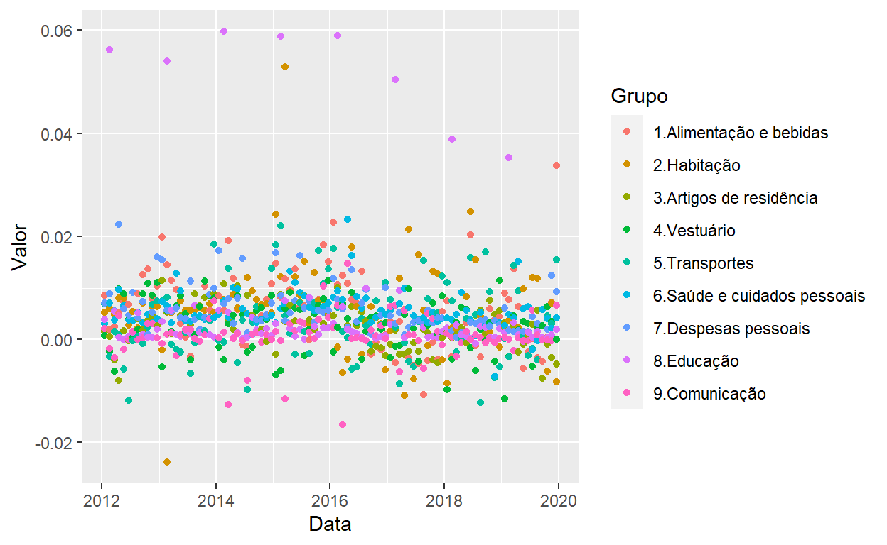
Mapeamento
A função aes() faz o mapeamento dos dados, ou seja, ela atribui variáveis (presentes nos dados que estamos utilizando) a aspectos do gráfico, como o eixo x, o eixo y, a cor ou o tamanho. Ela pode receber um, dois, três, ou mais parâmetros, dependendo do objetivo. No exemplo acima, utilizamos três parâmetros: um para o eixo x, um para o eixo y e um para as cores. Porém, poderíamos ter utilizado menos ou mais mapeamentos.
Eixos
No exemplo acima, utilizamos as “Datas” no eixo x e o “Valor” no eixo y, mas poderíamos, por exemplo, mapear a variável “Valor” no eixo x e a variável “Grupo” no eixo y:
ipca_valor %>%
ggplot() +
aes(x = `Valor`, y = `Grupo`) +
geom_point()
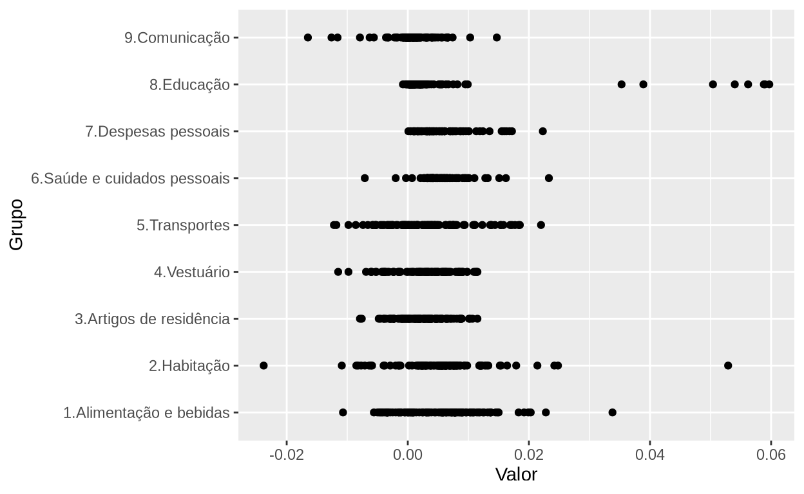
Cor
Adicionalmente, podemos mapear a variável “Data” no parâmetro color (dependendo do tipo de geometria, utilizamos o parâmetro fill):
ipca_valor %>%
ggplot() +
aes(x = `Valor`, y = `Grupo`, color = `Data`) +
geom_point()
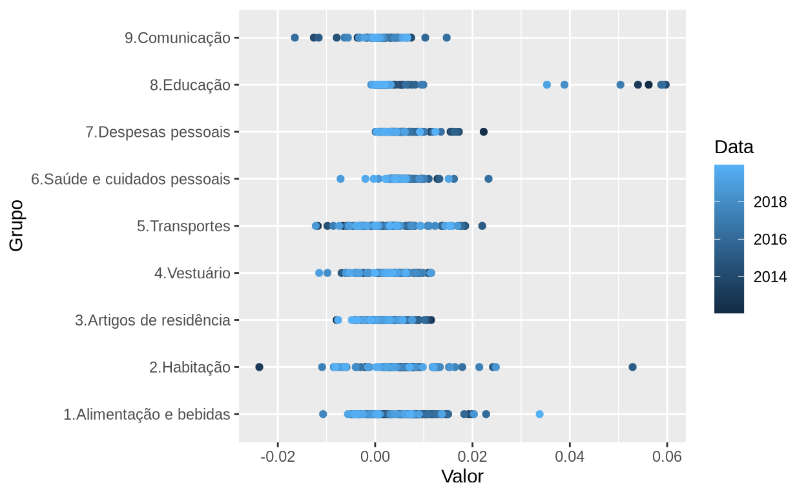
Podemos também repetir uma variável já utilizada em outro mapeamento. Por exemplo, além de mapear o “Grupo” no eixo y, vamos mapeá-lo também na cor:
ipca_valor %>%
ggplot() +
aes(x = `Valor`, y = `Grupo`, color = `Grupo`) +
geom_point()
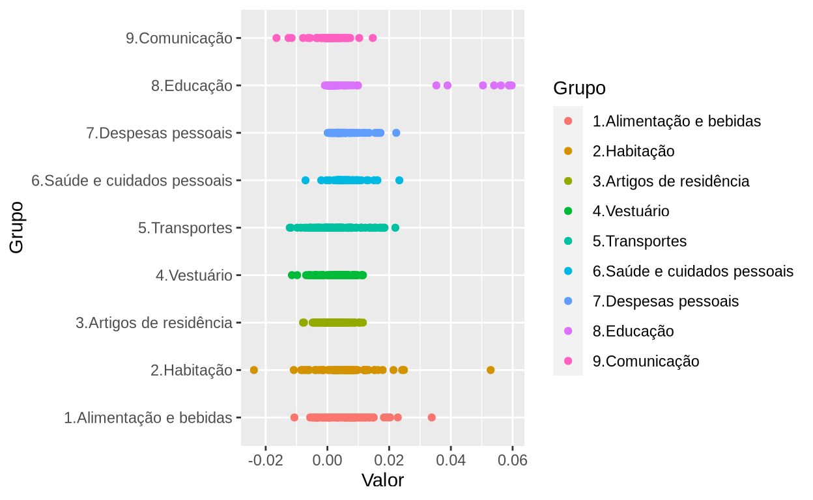
Tamanho
Outro mapeamento muito utilizado é o tamanho (por meio do parâmetro size). Assim como a cor, ele ajuda na distinção de diferentes grupos de dados (para facilitar a visualização, filtramos apenas um dos grupos da tabela):
ipca_valor %>%
filter(`Grupo` == "2.Habitação") %>%
ggplot() +
aes(x = `Data`, y = `Valor`, size = `Valor`) +
geom_point()
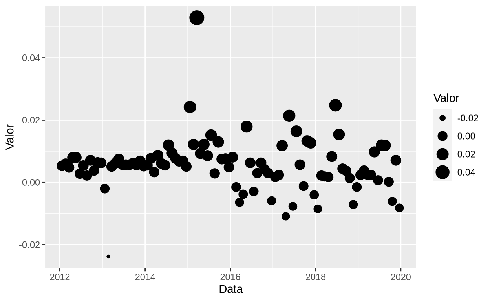
Geometria
Ao invés de um gráfico de pontos, poderíamos ter um gráfico de linha, barra, ou outro qualquer. Porém, é necessário adequar a geometria com o tipo de dados que se está trabalhando. Alguns tipos de geometria requerem mapeamentos específicos.
Vejamos alguns exemplos:
Área
Podemos mapear o “Grupo” com cores de preenchimento ao invés do contorno, utilizando o parâmetro fill, ao invés de color:
Boxplot
ipca_valor %>%
ggplot() +
aes(x = `Valor`, y = `Grupo`) +
geom_boxplot()
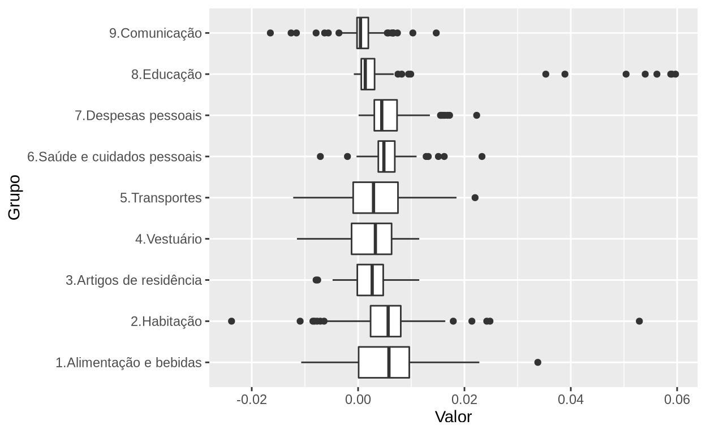
Coluna
Densidade
ipca_valor %>%
ggplot() +
aes(x = `Valor`, color = `Grupo`) +
geom_density()
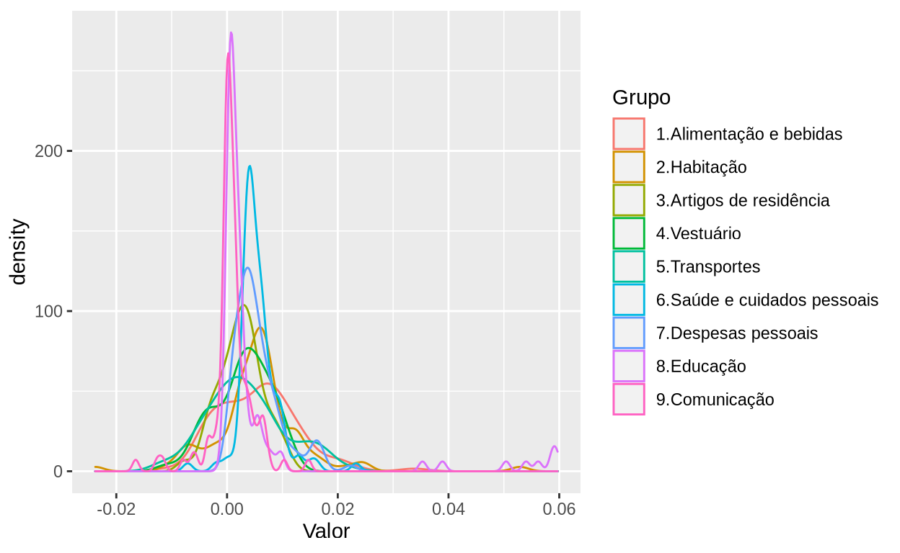
Linha
Cada função de geometria dessas possui parâmetros específicos para mudar alguns detalhes da sua forma.
É possível acrescentar mais de uma geometria. Vamos pegar o exemplo acima e acrescentar pontos (com a função geom_point()), uma reta horizontal (com a função geom_hline()) e uma reta vertical (com a função geom_vline()).
ipca_valor %>%
ggplot() +
aes(x = `Data`, y = `Valor`, color = `Grupo`) +
geom_line() +
geom_point() +
geom_hline(yintercept = 0.06) +
geom_vline(xintercept = "2015-07-20" %>% ymd())
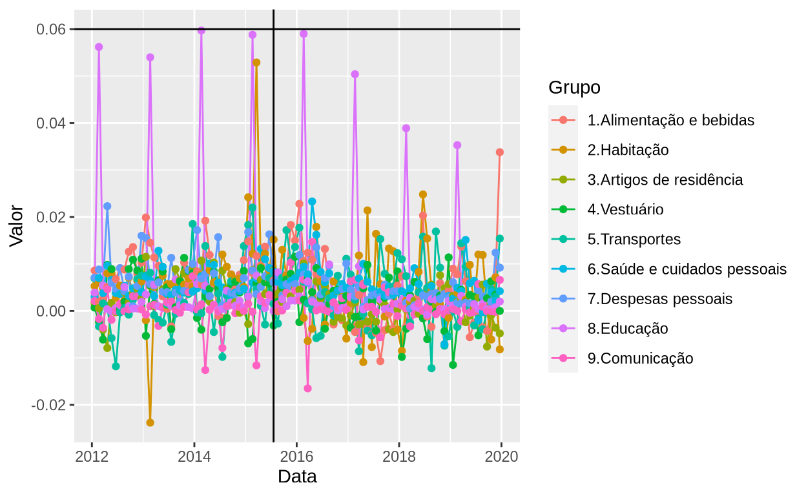
Rótulos
Os rótulos de um gráfico abrangem desde o título e o subtítulo até a legenda e os nomes dos eixos. No ggplot, esses rótulos são indicados na função labs(). Alguns desses rótulos já aparecem de forma automática nos gráficos bases, porém é possível alterá-los.
Vamos pegar o gráfico do exemplo acima e adicionar/modificar alguns rótulos:
ipca_valor %>%
ggplot() +
aes(x = `Data`, y = `Valor`, color = `Grupo`) +
geom_line() +
labs(
title = "Inflação mensal por grupos",
subtitle = "Evolução no tempo",
caption = "Fonte: Elaboração própria. Dados do SIDRA",
x = "Ano",
y = "Inflação"
)
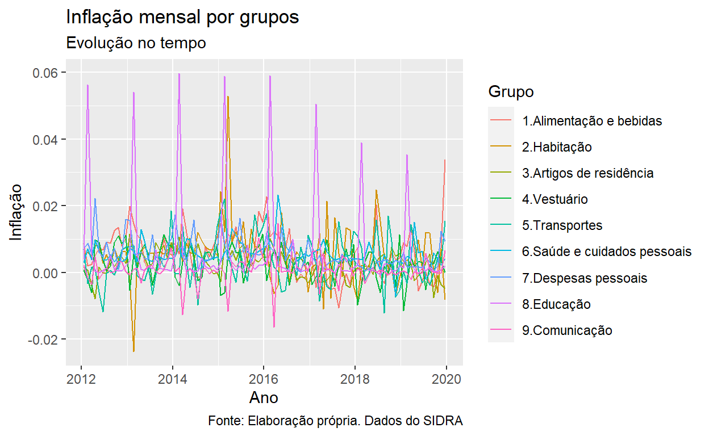
Esse rótulos podem ser customizados depois, alterando-se as propriedades do tema do gráfico, como veremos mais a frente.
Escalas
Frequentemente desejamos mudar as escalas dos eixos tanto x quanto y, para facilitar o entendimento dos dados. Caso queiramos dar um zoom no gráfico, é preferível manipular os dados com o pacote dplyr. As escalas aqui são mais úteis para manipular os eixos.
Existem diversas funções para manipular as escalas, cada um adequada para um tipo específico de de gráfico Usualmente essas função são da forma scale_x_... e scale_y_.... Nessas funções, nós passamos parâmetros que modificam a escala.
Vamos pegar o mesmo gráfico base do exemplo anterior e modificar as escalas dos eixos. Vamos modificar a escala das datas com a função scale_x_date() e a escala dos valores com a função scale_y_continuous()
ipca_valor %>%
ggplot() +
aes(x = `Data`, y = `Valor`, color = `Grupo`) +
geom_line() +
scale_x_date(date_breaks = "1 year",
date_labels = "%Y") +
scale_y_continuous(breaks = seq(from = -0.03, to = 0.06, by = 0.01),
labels = scales::percent_format(accuracy = 1))
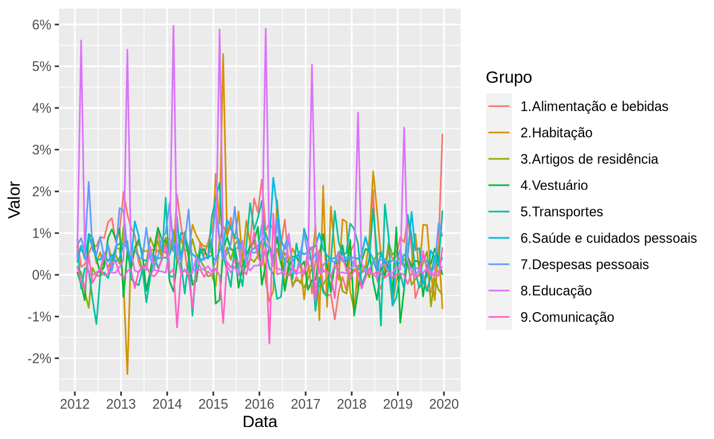
Temas
O pacote ggplot já vem junto com diversos temas, bastando chamar a função do tema para escolhê-lo (com o nome theme_...()). Vamos utilizar o exemplo dos rótulos, para mostrar bem as diferenças de cada tema.
ipca_valor %>%
ggplot() +
aes(x = `Data`, y = `Valor`, color = `Grupo`) +
geom_line() +
labs(
title = "Inflação mensal por grupos",
subtitle = "Evolução no tempo",
caption = "Fonte: Elaboração própria. Dados do SIDRA",
x = "Ano",
y = "Inflação"
) +
theme_bw()
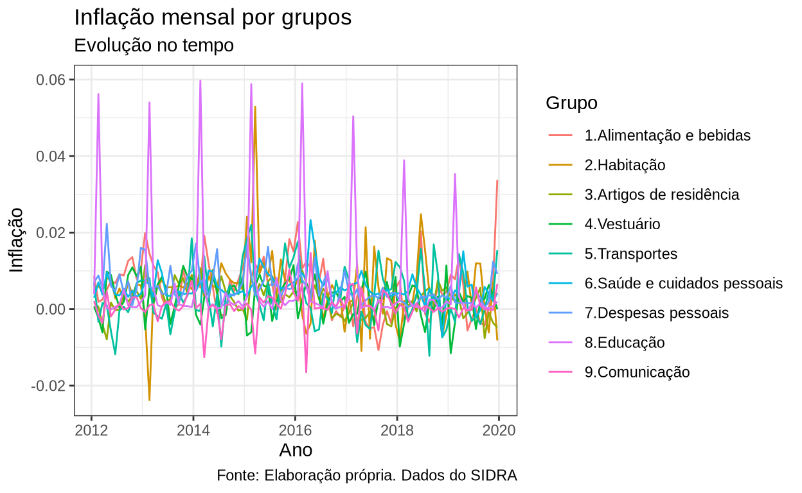
ipca_valor %>%
ggplot() +
aes(x = `Data`, y = `Valor`, color = `Grupo`) +
geom_line() +
labs(
title = "Inflação mensal por grupos",
subtitle = "Evolução no tempo",
caption = "Fonte: Elaboração própria. Dados do SIDRA",
x = "Ano",
y = "Inflação"
) +
theme_classic()
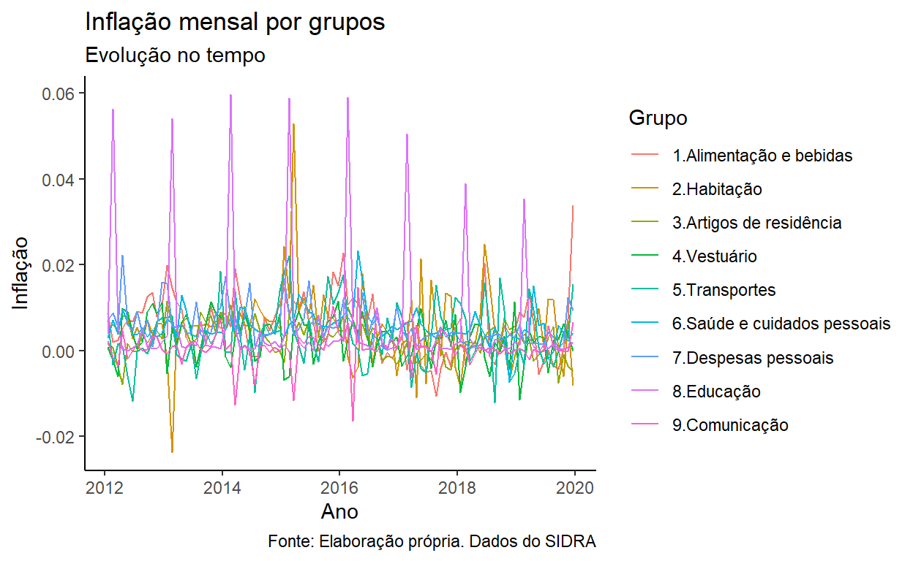
Existe um pacote chamado ggthemes que fornece temas adicionais:
install.packages("ggthemes")
ipca_valor %>%
ggplot() +
aes(x = `Data`, y = `Valor`, color = `Grupo`) +
geom_line() +
labs(
title = "Inflação mensal por grupos",
subtitle = "Evolução no tempo",
caption = "Fonte: Elaboração própria. Dados do SIDRA",
x = "Ano",
y = "Inflação"
) +
theme_gdocs()
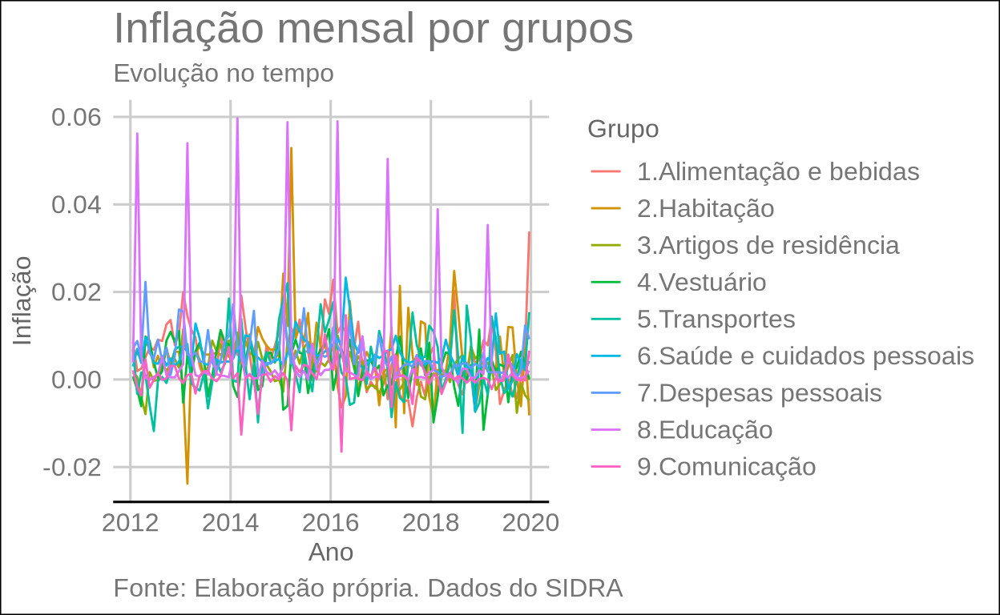
É possível também customizar muitos aspectos do gráfico com a função theme(), desde tamanho e fonte dos rótulos até posição da legenda.
Vamos listar todos os parâmetros que a função theme() recebe, através da função args():
theme %>%
args()
function (line, rect, text, title, aspect.ratio, axis.title,
axis.title.x, axis.title.x.top, axis.title.x.bottom, axis.title.y,
axis.title.y.left, axis.title.y.right, axis.text, axis.text.x,
axis.text.x.top, axis.text.x.bottom, axis.text.y, axis.text.y.left,
axis.text.y.right, axis.ticks, axis.ticks.x, axis.ticks.x.top,
axis.ticks.x.bottom, axis.ticks.y, axis.ticks.y.left, axis.ticks.y.right,
axis.ticks.length, axis.ticks.length.x, axis.ticks.length.x.top,
axis.ticks.length.x.bottom, axis.ticks.length.y, axis.ticks.length.y.left,
axis.ticks.length.y.right, axis.line, axis.line.x, axis.line.x.top,
axis.line.x.bottom, axis.line.y, axis.line.y.left, axis.line.y.right,
legend.background, legend.margin, legend.spacing, legend.spacing.x,
legend.spacing.y, legend.key, legend.key.size, legend.key.height,
legend.key.width, legend.text, legend.text.align, legend.title,
legend.title.align, legend.position, legend.direction, legend.justification,
legend.box, legend.box.just, legend.box.margin, legend.box.background,
legend.box.spacing, panel.background, panel.border, panel.spacing,
panel.spacing.x, panel.spacing.y, panel.grid, panel.grid.major,
panel.grid.minor, panel.grid.major.x, panel.grid.major.y,
panel.grid.minor.x, panel.grid.minor.y, panel.ontop, plot.background,
plot.title, plot.title.position, plot.subtitle, plot.caption,
plot.caption.position, plot.tag, plot.tag.position, plot.margin,
strip.background, strip.background.x, strip.background.y,
strip.placement, strip.text, strip.text.x, strip.text.y,
strip.switch.pad.grid, strip.switch.pad.wrap, ..., complete = FALSE,
validate = TRUE)
NULLÉ possível modificar todos esses elementos do gráfico. Aqui, vamos usar apenas alguns, a nível de exemplo:
ipca_valor %>%
ggplot() +
aes(x = `Data`, y = `Valor`, color = `Grupo`) +
geom_line() +
labs(
title = "Inflação mensal por grupos",
subtitle = "Evolução no tempo",
caption = "Fonte: Elaboração própria. Dados do SIDRA",
x = "Ano",
y = "Inflação"
) +
scale_x_date(
date_breaks = "1 year",
date_labels = "%Y"
) +
scale_y_continuous(
breaks = seq(from = -0.03, to = 0.06, by = 0.01),
limits = c(-0.03, 0.06),
labels = scales::percent_format(accuracy = 1)
) +
theme_hc() +
theme(
plot.title = element_text(face = "bold", size = 14, hjust = 0, colour = "black",),
plot.subtitle = element_text(face = "italic", size = 11, hjust = 0, colour = "grey30"),
plot.caption = element_text(face = "italic", size = 6, margin = margin(t = 15), hjust = 1),
legend.position = "top",
legend.text = element_text(face = "plain", colour = "grey30", size = 9),
legend.title = element_text(face = "bold", size = 10, hjust = 0.5),
axis.title = element_text(size = 10, margin = margin(t = 10, r = 10)),
axis.text = element_text(size = 8, margin = margin(t = 5, r = 5)),
panel.grid.major.y = element_line(colour = gray(0.85), size = 0.1)
) +
guides(color = guide_legend(nrow = 3, byrow = TRUE, title.position = "top"))
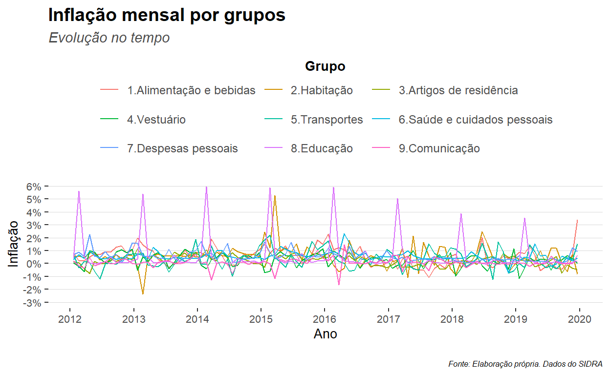
Porém, nem todos os aspectos do gráfico podem ser modificados pela função theme(). No exemplo acima, tivemos que chamar a função guides() para modificar a estrutura da legenda.
É possível salvar as especificações de tema para que essas sejam utilizadas em todos os gráficos seguintes, por meio das funções theme_set() (que define um tema) e theme_update() que modifica os elemtentos desse tema:
theme_update(
plot.title = element_text(face = "bold", size = 14, hjust = 0, colour = "black",),
plot.subtitle = element_text(face = "italic", size = 11, hjust = 0, colour = "grey30"),
plot.caption = element_text(face = "italic", size = 6, margin = margin(t = 15), hjust = 1),
legend.position = "top",
legend.text = element_text(face = "plain", colour = "grey30", size = 9),
legend.title = element_text(face = "bold", size = 10, hjust = 0.5),
axis.title = element_text(angle = 0, size = 10, margin = margin(t = 10, r = 10)),
axis.title.y = element_text(angle = 90),
axis.text = element_text(size = 8, margin = margin(t = 5, r = 5)),
panel.grid.major.y = element_line(colour = gray(0.85), size = 0.1)
)
ipca_valor %>%
ggplot() +
aes(x = `Data`, y = `Valor`, color = `Grupo`) +
geom_line() +
labs(
title = "Inflação mensal por grupos",
subtitle = "Evolução no tempo",
caption = "Fonte: Elaboração própria. Dados do SIDRA",
x = "Ano",
y = "Inflação"
) +
scale_x_date(
date_breaks = "1 year",
date_labels = "%Y"
) +
scale_y_continuous(
breaks = seq(from = -0.03, to = 0.06, by = 0.01),
limits = c(-0.03, 0.06),
labels = scales::percent_format(accuracy = 1)
) +
guides(color = guide_legend(nrow = 3, byrow = TRUE, title.position = "top"))
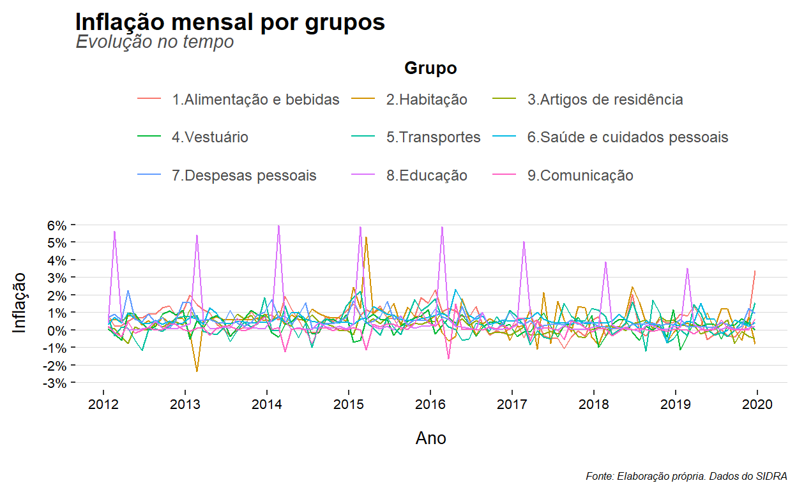
ipca_valor %>%
ggplot() +
aes(x = `Data`, y = `Valor`, color = `Grupo`) +
geom_line() +
guides(color = guide_legend(nrow = 3, byrow = TRUE, title.position = "top"))
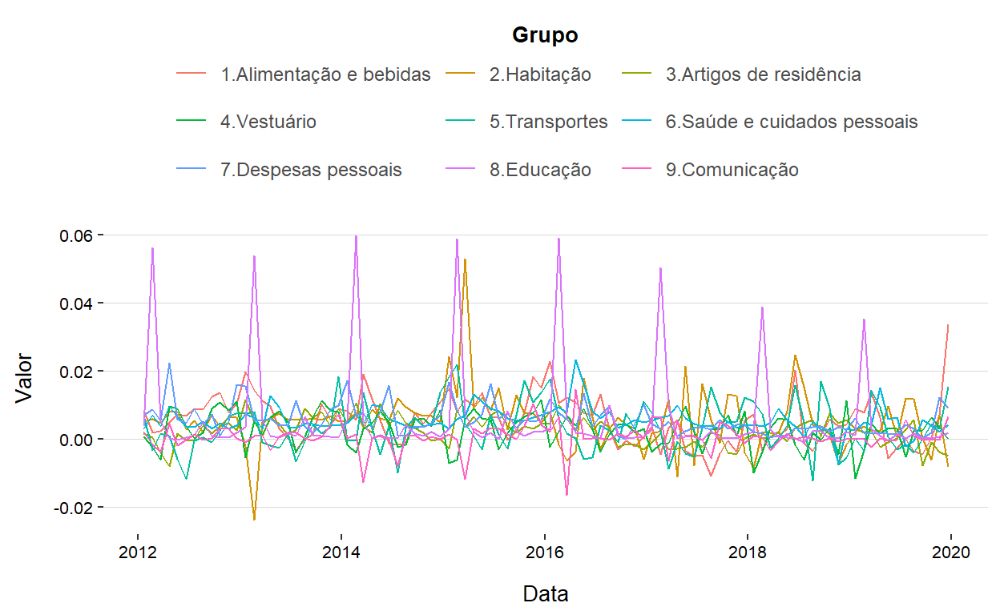